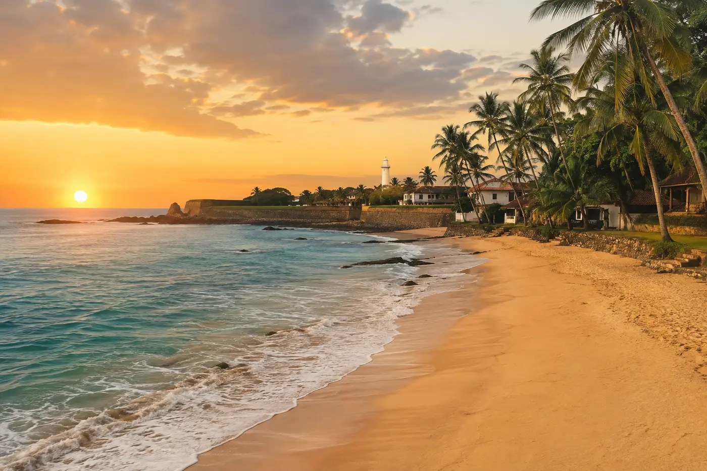

Best seller
Essential Sri Lanka
Colombo · Sigiriya · Kandy · Ella · Galle
- Sigiriya at sunrise
- Hill-country train
- Private Galle walk
From US$1,290 / person
Private tours · Local experts · 100% tailor-made
Ancient cities,misty mountains, wild national parks and tropical shores—woven into one private journey, made just for you.
Locally ownedBorn and based in Sri Lanka
Expert guidesLicensed & English-speaking
Private travelComfortable, flexible transport
Always beside you24/7 in-country support

Welcome to Serendib Trails
We don’t sell fixed holidays. We listen, design and refine a private Sri Lankan journey around the things that move you.
Our Colombo-based team pairs thoughtfully paced routes with characterful stays, trusted driver-guides and experiences that bring you closer to the island.
Handpicked journeys
Use these journeys as inspiration. Every route can be adjusted to your pace, interests and travel style.
Colombo · Sigiriya · Kandy · Ella · Galle
From US$1,290 / person
Wilpattu · Sigiriya · Gal Oya · Yala
From US$1,780 / person
Kandy · Ella · Udawalawe · Mirissa
From US$1,950 / person
Kandy · Hatton · Ella · Tangalle · Galle
From US$1,690 / person
* Sample starting prices vary by season, accommodation and group size.
An island of contrasts
Climb an ancient sky palace above the jungle.
Cloud forests, tea trails and iconic train rides.
Wild landscapes and remarkable encounters.
Stories, ramparts and Indian Ocean sunsets.
Sacred traditions beside a tranquil lake.
Closer to the island
Small moments and local connections often become the stories you tell for years.
Read the rhythms of the wild with an expert who sees what others miss.
Wind through emerald tea country on one of the world's most scenic railways.
Shop, grind and cook a fragrant Sri Lankan lunch with a local host.
Walk centuries-old lanes as the fort turns gold in the evening light.
Pedal quiet backroads, meet artisans and share a generous home-cooked meal.
Head offshore responsibly with an experienced marine crew at first light.
Make it yours
Four quick choices give our travel designers a meaningful place to begin.
The Serendib difference
No two travellers—or itineraries—are the same.
Our people and knowledge are rooted here.
Your journey benefits local people and places.
We are one call away throughout your trip.
Traveller stories
Sri Lanka is a year-round destination. December to April is ideal for the south and west, while May to September is often best for the east coast.
Absolutely. Every featured tour is a starting point. We can adjust the route, pace, stays and experiences around you.
Yes. Our journeys include a private vehicle and driver-guide, giving you flexibility and personal attention.
Yes. We provide private transfers from Bandaranaike International Airport and can coordinate all transport during your journey.
A travel designer reviews your preferences and normally contacts you within 24 hours to refine your personalised itinerary.
Your story starts here
Tell us how you want to travel. A local designer will shape your ideas into a thoughtful, personal itinerary.